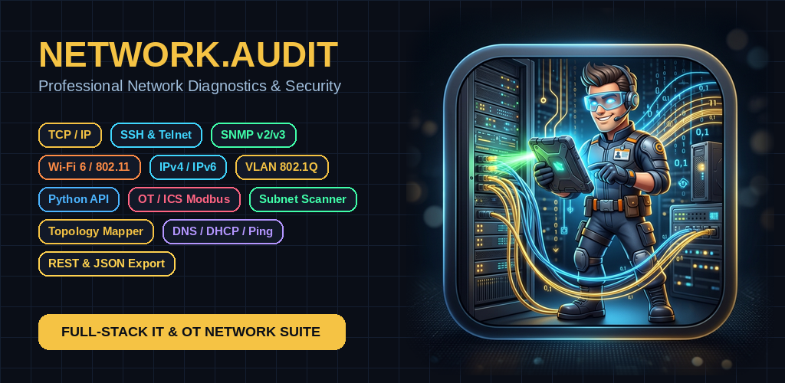
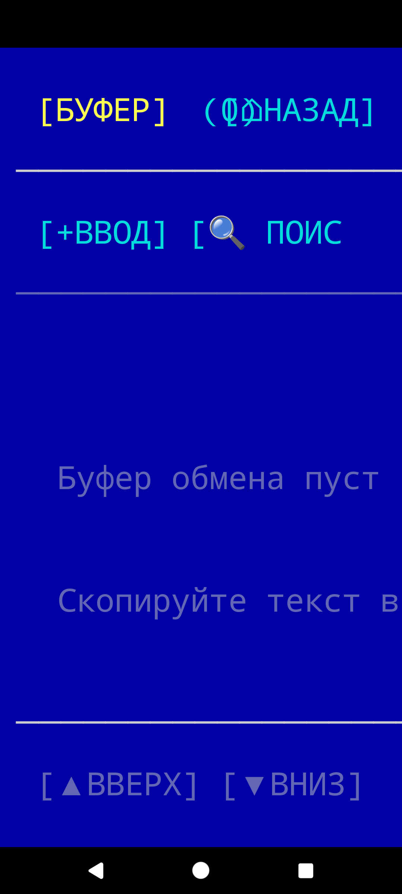
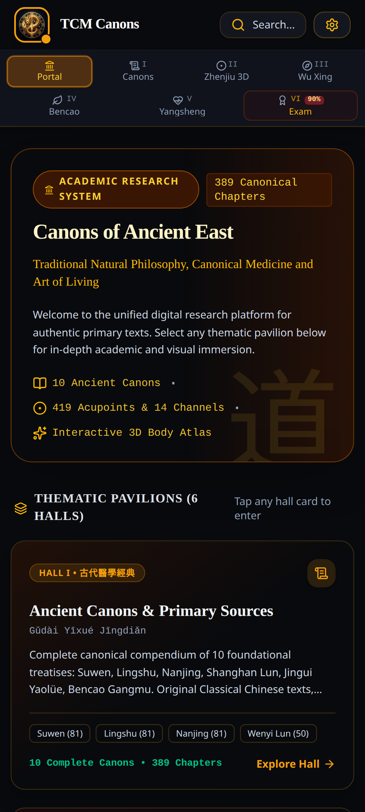
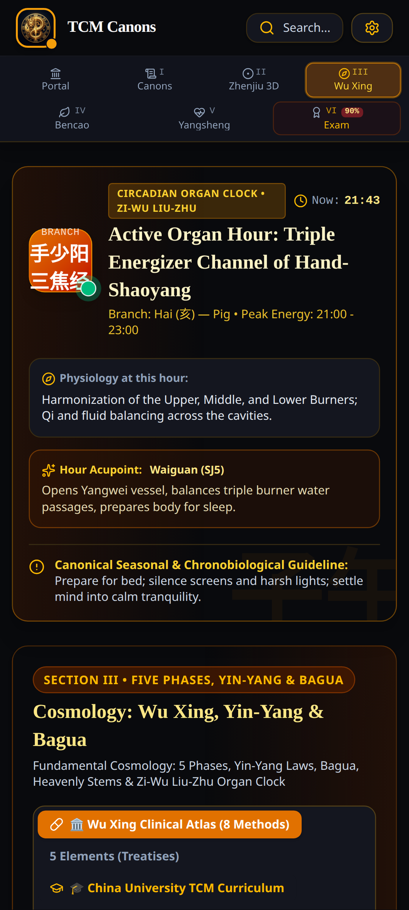
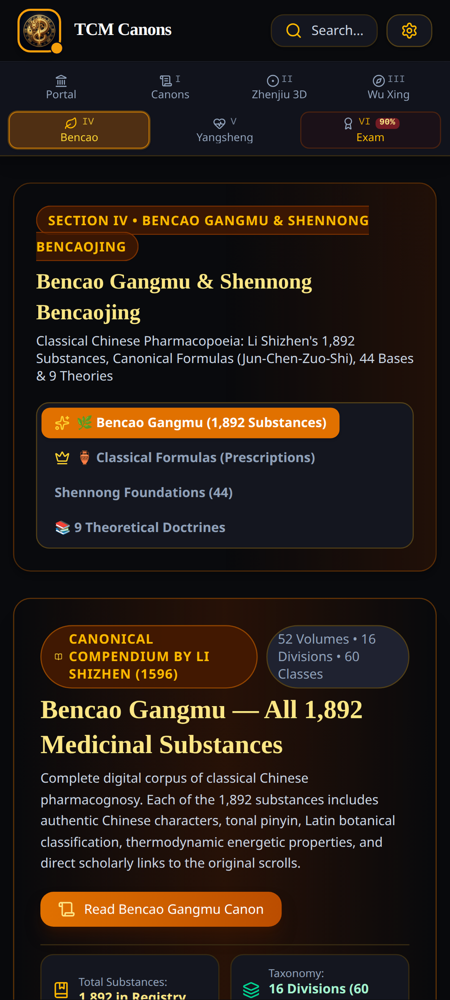

Инженерные TUI-системы, Языки программирования & Игры
Официальный портал разработчика: операционная текстовая среда Tdroid, встроенный язык TDScript, компилятор байткода .tbc и настольные игры.
👨💻 Об авторе и разработчике
Приветствую! Меня зовут Антон Михайлов. Я создатель независимого встраиваемого языка программирования и платформы автоматизации TDscript v1.4.0 (Core 1.1) с собственной средой разработки TDscript Studio IDE. Моя инженерная деятельность охватывает два специализированных направления:
- Системы с экстремальным минимализмом (0 KB VRAM / Headless): виртуальная машина и компилятор байткода TDscript Core VM, консольная операционная среда Tdroid, работающие исключительно в текстовой псевдографике (TUI / Turbo Vision) или в фоновом безголовом режиме без малейшей нагрузки на видеочип и с потреблением 9–15 МБ ОЗУ.
- Графические и прикладные инженерные комплексы: среда разработки TDscript Studio (Compose Desktop / Android), мобильные интерактивные 3D-атласы (OpenGL), картографирование сетей (Network Audit) и настольные игры, где графический процессор задействуется целевым образом.
🔬 Специализация
Архитектура Android (Kotlin/Java), проектирование виртуальных машин и встраиваемых скриптовых языков (AST & байткод), TUI интерфейсы (псевдографика Turbo Vision/DOS), сетевые протоколы (UDP, TCP, LoRa, Modbus) и соревновательный игровой искусственный интеллект.
🌱 Принципы конфиденциальности
100% On-Device обработка данных. Никакой телеметрии, никаких скрытых трекеров и рекламных SDK. Все вычисления, пользовательские скрипты и персональные базы данных выполняются исключительно на вашем физическом устройстве.
🛡️ Network Audit — Профессиональный аудит и диагностика сетей v1.0.1 • Android 16 • Открытое тестирование
Network Audit — универсальный инженерный комплекс для сканирования, картографирования и тестирования безопасности локальных (IT) и промышленных (OT / ICS) сетей прямо со смартфона или планшета Android.

⚡ Ключевые возможности и протоколы
🔍 Сканирование узлов и портов
Многопоточный поиск активных устройств в подсети, определение открытых портов (TCP/UDP), распознавание вендоров оборудования по MAC OUI и баннеров служб.
🗺️ Интерактивная карта топологии
Визуализация сетевой инфраструктуры с автоматической группировкой шлюзов, коммутаторов, серверов и рабочих станций с ручной расстановкой и экспортом схем.
🏭 Промышленный аудит (OT / ICS)
Инспекция ПЛК и промышленных протоколов: Modbus TCP, PROFINET, диагностика регистров, опрос датчиков и контроллеров автоматизации.
🐕 Непрерывный мониторинг (Watchdog Daemon)
Фоновая служба мониторинга задержки (ping), контроль стабильности критических узлов и обнаружение аномалий (включая защиту от ARP-spoofing) с уведомлениями.
📸 Интерфейс Network Audit


📱 Tdroid — Текстовый ретро-лаунчер для Android v1.0.8 • 3.1–3.4 МБ
Tdroid — это сверхлегкий текстовый ретро-лаунчер для Android в стиле Turbo Vision / DOS / VT100, созданный Антоном Михайловым. Он спроектирован на монохромном TUI-движке с нулевыми тяжелыми графическими библиотеками (0 KB VRAM) и рекордным потреблением памяти: всего 9–25 МБ ОЗУ (в 15–20 раз меньше обычных графических оболочек). Превращает смартфон в быстрый рабочий терминал инженера, системного администратора и любителя цифрового минимализма.
📦 Редакции приложения: Free и Pro
📱 TextDroid Free Бесплатно • 3.1 МБ
Идеально для повседневного использования без цифрового шума:
- Минималистичный текстовый интерфейс: нулевая нагрузка на GPU (0 KB VRAM).
- Мгновенный запуск приложений: быстрый поиск и чистый алфавитный каталог.
- Псевдографика и значки: 60+ символов для аккуратного оформления.
- Виджеты первой необходимости: часы, уровень заряда, системный монитор, базовые заметки.
- 100% On-Device приватность: без рекламы, аналитики и сетевых трекеров.
💎 Tdroid Pro Полная версия
Расширенный лаунчер и среда для инженеров:
- Искусственный интеллект и LLM (3 режима свободы):
• Встроенный быстрый ИИ: мгновенные ответы и генерация тестов «из коробки» без ключей.
• Свои API-ключи: прямое подключение Google Gemini, OpenAI ChatGPT, Claude, DeepSeek, OpenRouter.
• Локальные LLM (100% приватность): подключение к домашнему серверу Ollama или LM Studio по Wi-Fi без выхода в интернет. - Двухпанельный Т-Командер (T-Commander): файловый менеджер (память телефона, SD-карты, USB-OTG, FTP и WebDAV).
- Интеграция с TDscript: запуск скриптов классического ядра TDscript v1.0.1 (Legacy) непосредственно из терминала лаунчера (для полноценной разработки создана отдельная IDE TDscript Studio).
- Компиляция и экспорт: сборка автономных APK, Linux-пакетов (.sh/.desktop), Windows (.bat) и байткода .tbc.
- Аппаратный доступ: GPS, камера, фонарик, синтез речи TTS, датчики движения, SQLite.
- Сетевой стек SecOps: сканер портов, ping, аудит Wi-Fi, прямое управление Modbus TCP и UDP.
- Пакет TUI-игр: 14 встроенных терминальных классических игр (Тетрис, Змейка, Сапер, Сокобан, Шахматы и др.).
📸 Галерея интерфейса Tdroid Pro
 Главный экран (Turbo Vision)
Главный экран (Turbo Vision)
 Конструктор рабочего стола & Меню
Конструктор рабочего стола & Меню
 Чистый каталог приложений [⚙]
Чистый каталог приложений [⚙]

Менеджер буфера обмена с историей📱 Tdroid Pro Legacy — Версия для старых смартфонов (Android 5.0 – 6.0+)
Вторая жизнь для старых, медленных и архивных телефонов. Благодаря архитектуре без тяжелых графических библиотек Tdroid потребляет всего 15–25 МБ ОЗУ и плавно работает даже на старых одно- и двухъядерных процессорах MediaTek и Snapdragon без нагрева и подтормаживаний.
🧠 Нейросети и искусственный интеллект на старых устройствах: Большинство современных приложений с ИИ требуют новейшие версии Android и мощное железо. Благодаря Tdroid владельцы раритетных смартфонов наконец-то получают полноценный доступ к современным LLM (нейросетям) — встроенный ИИ-чат и быстрые команды работают даже на устройствах десятилетней давности без устаревших ограничений веб-браузеров!
- Искусственный интеллект (LLM): Интегрированный ИИ-чат и команда
ai <вопрос>прямо из терминала на смартфонах с Android 5.0+. - Все включено: Двухпанельный Т-Командер (T-Commander с поддержкой SD-карт, FTP, WebDAV), Заметки, Ридер TXT, Задачи, Оффлайн калькулятор, IDE TDScript и 14 TUI-игр.
- Полная автономность: Работает 100% оффлайн без Google Play Services и сервисов Google.
- Максимальное энергосбережение: Монохромный чёрный фон экономит до 40% батареи.
- Совместимость: Android 5.0–5.1 Lollipop / Android 6.0 Marshmallow и новее (API 21+).
📖 Инструкция по установке на старый смартфон:
- Нажмите зеленую кнопку «Скачать Tdroid Pro APK для Android 5–6» выше прямо со смартфона (или скачайте на ПК и скопируйте в телефон через USB).
- Откройте встроенный «Проводник» / «Файлы» на телефоне и перейдите в папку Download (Загрузки).
- Нажмите на загруженный файл
Tdroid-Pro-Legacy.apk. - Если система предупредит об установке: нажмите «Настройки» → активируйте «Неизвестные источники» (Разрешить установку приложений не из Play Market).
- Нажмите «Установить». После установки нажмите кнопку «Домой» и выберите Tdroid в качестве основного лаунчера «Всегда».
⚡ TDscript v1.4.0 (Core 1.1) — Независимый язык программирования и открытая экосистема Стабильный релиз
TDscript — это самостоятельный, полнофункциональный встраиваемый язык программирования и открытая программная экосистема, созданная Антоном Михайловым. Язык спроектирован как универсальный слой оркестрации аппаратуры и микросхем (Device & Chip Orchestration): от физических шин (I2C, SPI, UART, CAN) и промышленных ПЛК (Modbus TCP/RTU) до робототехники (ROS 2) и автономных локальных ИИ-агентов с нулевым оверхедом видеопамяти (0 KB VRAM / Headless).
TDscript не является внутренней надстройкой одного лишь лаунчера Tdroid. Это полностью самостоятельный открытый технологический стек:
- Собственная кроссплатформенная IDE: TDscript Studio (нативные сборки для Ubuntu/Debian, Fedora, Arch/AppImage, портативный архив, исполняемый Fat JAR и Android APK с поддержкой USB-OTG шинных адаптеров и Bluetooth LE).
- Автономная виртуальная машина и компилятор: TDscript Core 1.1 компилирует исходный код в компактный детерминированный байткод
.tbcс криптографической валидацией цифровых подписей Ed25519 и контролем целостности SHA-256. - Встраиваемый SDK (библиотека TDModules): подключается как независимый движок в сторонние Java/Kotlin, Android, Linux и ROS 2 системы. Лаунчер Tdroid — лишь один из внешних клиентов, использующий этот интерпретатор.
- AI-First агентный цикл: встроенная формальная GBNF-грамматика, машиночитаемые компактные ошибки и замкнутый контур самопочинки кода (Agentic Loop) без галлюцинаций внешних импортов.
• TDscript v1.4.0 / Core 1.1 (Текущий промышленный стандарт / Modern AI-First): основной рабочий релиз. Включает нативные шестнадцатеричные литералы (
0x76, 0xD0), индексацию ByteArray[i] (0..255), интерполяцию переменных в LString (запрет конкатенации +), строгую диспетчеризацию методов TDS_E106, аппаратный сторожевой таймер WATCHDOG, пространственную песочницу CapabilityScope и формальную GBNF-грамматику для LLM.
• TDscript v1.0.1 / Core 1.0 (Архивная / Legacy Stable): ранняя базовая редакция 2024 года, сохранённая для 100% обратной совместимости старых скриптов в мобильном лаунчере Tdroid (десятичные адреса регистров, символический LString без интерполяции, полный JSON ошибок).
💻 Живой синтаксис TDscript AI-First (реальный рабочий код из бенчмарка):
// 1. Опрос сенсора Bosch BME280 по шине I2C (0x76, регистр 0xD0)
let chipId = I2C.read(0x76, 0xD0, 1);
// 2. Чтение температуры из Modbus TCP регистра контроллера
let boilerTemp = PLC.modbusRead("127.0.0.1", 100);
if (boilerTemp > 250) {
PLC.modbusWrite("127.0.0.1", 101, 0); // Аварийное отключение насоса
WATCHDOG.emergencyStop();
} else {
WATCHDOG.feed(); // Подпитка аппаратного сторожевого таймера
print("STATUS_OK: BME280=" + chipId[0] + " Temp=" + boilerTemp);
}📂 Открытые материалы, репозитории и датасеты для LLM:
📦 Скачать TDscript Studio v1.1.0 для Linux & Android
Готовые автономные пакеты со встроенной оптимизированной JVM (не требует отдельной установки Java) и мобильный APK:
sudo dpkg -i tdscript-studio*.deb
🎩 Fedora / RHEL / openSUSE (.rpm)
sudo rpm -i tdscript-studio*.rpm
🚀 Universal AppImage (Все Linux)
chmod +x *.AppImage && ./*.AppImage
📦 Портативный архив (.tar.gz)
./tdscript-studio/bin/tdscript-studio
☕ Universal Fat JAR (Java 17+)
java -jar tdscript-studio*.jar
📱 Android Mobile Studio (.apk)
Установка APK на устройство
🃏 Карточная игра «Семёрки и Девятки» (Sevens & Nines) Desktop & Android
Кроссплатформенный карточный симулятор и соревновательная стратегия с поддержкой классических мировых правил и раскладок:
- Русская «Девятка» — традиционная колода из 36 карт с раскладкой от девяток в обе стороны.
- Международные «Семёрки» (Parliament / Fan Tan) — полная колода из 52 карт, динамичная тактика блокировки ходов соперников.
- Fan Tan (Card Dominoes) — соревновательный режим с банком, фишками и штрафами за пропуск хода.
Особенности и движок игры
🤖 Продвинутый искусственный интеллект
Интеллектуальные боты с анализом рук соперников и стратегическим удержанием карт для перехвата инициативы.
🎴 Индивидуальная настройка
8 встроенных дизайнерских рубашек карт + загрузка собственных картинок, выбор цвета сукна (Изумруд, Сапфир, Бордо, Графит).
🔊 Процедурный звук
Аудиодвижок с реалистичными звуками сдачи карт, стука фишек и победных аккордов без утяжеления размера игры.
☯️ Каноны ТКМ — 3D-атлас акупунктуры, монографии меридианов и первоисточники Android • BUCM & WHO Standard

«Каноны ТКМ» (TCM Canons) — фундаментальный интерактивный медицинский и академический справочник по Традиционной Китайской Медицине, созданный на основе канонических трактатов («Хуан-ди Нэй-цзин», «Нань-цзин») и современных стандартов Пекинского университета традиционной китайской медицины (BUCM) и ВОЗ (WHO).
Приложение работает полностью автономно (100% Offline), без рекламы, с соблюдением полной конфиденциальности персональных данных и выбором аутентичных визуальных стилей оформления (Императорский Нефрит, Бронза, Золото, Киноварная печать, Даосский талисман, Тушь, Минимализм).
Ключевые модули и возможности
🧘 3D-атлас акупунктуры (Zhenjiu 3D)
Высокоточная трёхмерная модель тела с визуализацией 14 главных каналов и 361 классической точки. Интерактивное вращение, масштабирование, выбор текстур (бронзовая статуя, стекло, манекен).
📋 Канонический паспорт 10 параметров
Исчерпывающее досье каждой точки: иероглифика и этимология, категория (Шу-точки, Юань, Ло, Си), топография в пропорциональных цунях, анатомия, функции ТКМ, цитаты трактатов, клинические показания, техника укола, мокса и предостережения.
🌊 Монографии 14 меридианов
Полный анатомический ход внешних и внутренних ветвей с анализом 40 канонических глаголов действия, дифференциальная диагностика синдромов Ши-Дун и Суо-Шэн, правила У-Син «Мать-Дитя» (Нань-Цзин 69).
📜 Библиотека древних канонов
Оригинальные древнекитайские тексты «Су-вэнь», «Лин-шу», «Нань-цзин», «Шэнь-нун бэнь-цао цзин» с параллельным переводом и академическими комментариями.
🌿 Фитотерапия и формулы (Бэнь-Цао)
Каталог целебного сырья традиционной фармакопеи, классические прописи («Шан-хань Лунь»), свойства, характер, вкус и тропность к меридианам.
🌌 Космология и Хронопунктура
Учение о Пяти Стихиях (У-Син), Небесные стволы и Земные ветви (У-Юнь Лю-Ци), циклический расчёт открытых точек по методикам Цзы-У Лю-Чжу и Лин-Гуй Ба-Фа.
Интерфейс и 3D-модель приложения
 Интерактивный 3D-манекен и проекция меридиана
Интерактивный 3D-манекен и проекция меридиана
 Фокус камеры на акупунктурной точке и паспорт параметров
Фокус камеры на акупунктурной точке и паспорт параметров

Главный портал с выбором восточных стилей оформления Чтение первоисточников и канонов
Чтение первоисточников и канонов

Пять Стихий, Стволы и Ветви
Каталог трав и классических формул⚖️ Impressum (Юридическая информация)
Angaben gemäß § 5 DDG (Сведения согласно закону ФРГ):
Anton Mykhailov
Software- & Spieleentwicklung
Rudolf-Diesel-Straße 21b
38820 Halberstadt, Deutschland (Германия)
Контактные данные:
E-Mail: drmykhailov@gmail.com
Телефон: +49 172 9735840
Налогообложение (Umsatzsteuer):
Gemäß § 19 UStG wird keine Umsatzsteuer erhoben und ausgewiesen (Статус малого предпринимателя / Kleinunternehmerstatus согласно законодательству Германии).
Ответственный за содержание согласно § 18 Abs. 2 MStV:
Anton Mykhailov, Rudolf-Diesel-Straße 21b, 38820 Halberstadt
🔒 Datenschutzerklärung (Политика конфиденциальности)
1. Ответственное лицо:
Anton Mykhailov, Rudolf-Diesel-Straße 21b, 38820 Halberstadt, E-Mail: drmykhailov@gmail.com
2. Мобильные приложения и игры (Tdroid Free, Tdroid Pro, Sevens & Nines, TCM Canons):
- Отсутствие регистрации: Наши программные приложения и игры не требуют учетных записей, авторизации и ввода личных данных.
- 100% Локальное хранение (On-Device Privacy): Заметки, скрипты TDScript, базы данных SQLite, настройки лаунчера и игровые сохранения хранятся исключительно на вашем личном устройстве.
- Никакой телеметрии и рекламы: Мы не ведем учет действий пользователя, не внедряем сторонние рекламные сети (AdMob, Meta и др.) и не передаем аналитику третьим лицам.
- Права пользователя: В соответствии с нормами GDPR (DSGVO), вы имеете полный суверенитет над своими данными с правом их немедленного локального удаления.